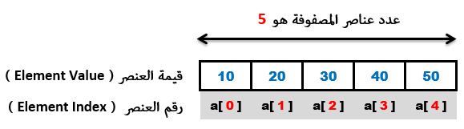

C++التعامل مع المصفوفات
مفهوم المصفوفات في C++
المصفوفة ( Array ) عبارة عن متغير واحد يتألف من عدة عناصر ( Elements ) من نفس النوع.
و كل عنصر في المصفوفة يمكن تخزين قيمة واحدة فيه.
عناصر المصفوفة تتميز عن بعضها من خلال رقم محدد يعطى لكل عنصر يسمى index.
أول عنصر في المصفوفة دائماً يكون رقمه 0.
الآن, عليك معرفة أن عدد عناصر المصفوفة ثابت, أي بمجرد أن قمت بتحديده لا يمكنك تغييره من جديد, مع الإشارة إلى أنك تستطيع تغيير قيم هذه العناصر متى شئت.
فوائد المصفوفات
تقليل عدد المتغيرات المتشابهة, فمثلاً إذا كنا نريد تعريف 10 متغيرات نوعهم int, نقوم بتعريف مصفوفة واحدة تتألف من 10 عناصر.
التعامل مع الكود يصبح أسهل, لأنك إذا قمت بتخزين المعلومات داخل مصفوفة, تستطيع تعديلهم, مقارنتهم أو جلبهم كلهم دفعة واحدة بكود صغير جداً باستخدام حلقة.
تستطيع الوصول لأي عنصر من خلال رقم الـ index الخاص به.
تعريف مصفوفة في C++
هناك ثلاث طرق يمكنك اتباعها لتعريف مصفوفة (Declare Array) جديدة سنتعرف عليها تباعاً.
// الأسلوب التالي يستخدم لتعريف مصفوفة مع تحديد عدد عناصرها
datatype[size] arrayName;
// الأسلوب التالي يستخدم لتعريف مصفوفة مع تحديد قيمها الأولية
datatype[] arrayName = {value1, value2, ..};
// الأسلوب التالي يستخدم لتعريف مصفوفة مع تحديد عدد عناصرها و قيمة بعض عناصرها
datatype[size] arrayName = {value1, value2, ..};
datatype: هو نوع القيم التي يمكن تخزينها في عناصر المصفوفة.
size: هو عدد عناصر المصفوفة.
arrayName: هو إسم المصفوفة.
[]: هذا الرمز يمثل من كم بعد تتألف المصفوفة.
أمثلة حول طريقة تعريف مصفوفة أحادية ( One Dimensional Array ).
أمثلة
// و تتألف من 5 عناصر int نوعها ,arr هنا قمنا بتعريف مصفوفة ذات بعد واحد إسمها
int arr[5];
// و وضعنا فيها 6 عناصر, و هذا يعني أن عدد عناصرها أصبح 6 لأننا لم نحدد عدد عناصرها int نوعها ,arr هنا قمنا بتعريف مصفوفة ذات بعد واحد إسمها
int arr[] = {1, 2, 3, 4, 5, 6};
// و تتألف من 5 عناصر, و قمنا بوضع قيم أولية في أول 3 عناصر فيها int نوعها ,arr هنا قمنا بتعريف مصفوفة ذات بعد واحد إسمها
int arr[5] = {1, 2, 3};
أمثلة حول طريقة تعريف مصفوفة ثنائية ( Two Dimensional Array ).
أمثلة
// و تتألف من 3 × 4 عناصر int نوعها ,arr هنا قمنا بتعريف مصفوفة ذات بعدين إسمها
int arr[4][3];
// وضعنا فيها مصفوفتين تتألف كل واحدة منهما من 3 عناصر, هذا يعني أن المصفوفة تتألف من 2 × 3 عناصر int نوعها ,arr هنا قمنا بتعريف مصفوفة ذات بعدين إسمها
int arr[][] = {
{1, 2, 3},
{4, 5, 6}
};
// و تتألف من 3 × 4 عناصر, وقمنا بوضع 6 قيم أولية فيها int نوعها ,arr هنا قمنا بتعريف مصفوفة ذات بعدين إسمها
int arr[4][3] = {
{1, 2, 3},
{4, 5, 6}
};
الوصول لعناصر المصفوفة في C++
لنفترض الآن أننا قمنا بتعريف مصفوفة نوعها int, إسمها a, و تتألف من 5 عناصر.
int a[] = { 10, 20, 30, 40, 50 };
يمكنك تصور شكل المصفوفة a في الذاكرة كالتالي.

بما أن المصفوفة تتألف من 5 عناصر, تم إعطاء العناصر أرقام indexes بالترتيب من 0 إلى 4.
إذاً هنا أصبح عدد عناصر المصفوفة يساوي 5 و هو ثابت لا يمكن تغييره لاحقاً في الكود.
و للوصول لقيمة أي عنصر نستخدم index العنصر الذي تم إعطاؤه له.
في المثال التالي, قمنا بتعريف مصفوفة, ثم غيرنا قيمة العنصر الأول فيها, و من ثم عرضنا قيمة جميع العناصر.
مثال
#include <iostream>
using namespace std;
int main()
{
// هنا قمنا بتعريف مصفوفة تتألف من 5 عناصر
int arr[] = {10, 20, 30, 40, 50};
// هنا قمنا بتغيير قيمة العنصر الأول و العنصر الأخير في المصفوفة
arr[0] = 1;
arr[4] = 5;
// هنا قمنا بعرض قيم جميع عناصر المصفوفة
cout << "arr[0] = " << arr[0] << endl;
cout << "arr[1] = " << arr[1] << endl;
cout << "arr[2] = " << arr[2] << endl;
cout << "arr[3] = " << arr[3] << endl;
cout << "arr[4] = " << arr[4] << endl;
return 0;
}
•سنحصل على النتيجة التالية عند التشغيل
arr[0] = 1
arr[1] = 20
arr[2] = 30
arr[3] = 40
arr[4] = 5
طريقة وضع قيم أولية لعناصر المصفوفة في C++
إذا قمت بإنشاء مصفوفة جديدة مع تحديد عدد عناصرها فقط و بدون إعطائها قيم أولية, من المحتمل أن تجد قيم غريبة في بعض عناصرها.
سبب ذلك أن هذه القيم كانت موجودة مسبقاً في الذاكرة لا أكثر.
لذا في حال أردت إنشاء مصفوفة جديدة مع حذف أي قيم إفتراضية قد تكون موجودة فيها, يجب أن تقوم بتمرير القيمة الإفتراضية التي تريد وضعها لعناصر المصفوفة لحظة إنشائها.
في المثال التالي, قمنا بتعريف مصفوفة تتألف من 5 عناصر و لم نعطها قيم أولية, ثم قمنا بعرض القيم الإفتراضية الموجودة فيها.
المثال الأول
#include <iostream>
using namespace std;
int main()
{
// هنا قمنا بتعريف مصفوفة تتألف من 5 عناصر
int arr[5];
// هنا قمنا بعرض القيم الإفتراضية الموجودة في عناصر المصفوفة
cout << "arr[0] = " << arr[0] << endl;
cout << "arr[1] = " << arr[1] << endl;
cout << "arr[2] = " << arr[2] << endl;
cout << "arr[3] = " << arr[3] << endl;
cout << "arr[4] = " << arr[4] << endl;
return 0;
}
•عند تشغيل البرنامج حصلنا على نتيجة غريبة حيث وجدنا قيم إفتراضية في بعض العناصر.
•ملاحظة: من الطبيعي أن لا تظهر لك نفس النتيجة التي ظهرت لنا لأن هذه القيم هي قيم عشوائية.
arr[0] = 8
arr[1] = 0
arr[2] = 42
arr[3] = 0
arr[4] = 15275776
في المثال التالي قمنا بوضع القيمة 0 كقيمة أولية لجميع عناصر المصفوفة, ثم قمنا بعرض قيمها.
المثال الثاني
#include <iostream>
using namespace std;
int main()
{
// هنا قمنا بتعريف مصفوفة تتألف من 5 عناصر مع تحديد أن القيمة الإفتراضية في جميع عناصرها هي 0
int arr[5] = {0};
// هنا قمنا بعرض القيم الإفتراضية الموجودة في عناصر المصفوفة
cout << "arr[0] = " << arr[0] << endl;
cout << "arr[1] = " << arr[1] << endl;
cout << "arr[2] = " << arr[2] << endl;
cout << "arr[3] = " << arr[3] << endl;
cout << "arr[4] = " << arr[4] << endl;
return 0;
}
•سنحصل على النتيجة التالية عند تشغيل البرنامج.
arr[0] = 0
arr[1] = 0
arr[2] = 0
arr[3] = 0
arr[4] = 0
طريقة معرفة عدد عناصر المصفوفة في C++
إذا أردت معرفة عدد عناصر أي مصفوفة, يمكنك الحصول عليه من خلال قسمة حجم المصفوفة, على نوع العناصر المخزنة فيها.
مثال
#include <iostream>
using namespace std;
int main()
{
// هنا قمنا بتعريف مصفوفة تتألف من 5 عناصر مع تحديد أن القيمة الإفتراضية في جميع عناصرها هي 0
int arr[] = {1, 2, 3, 4, 5};
// n على حجم نوع أول عنصر فيها, و من ثم قمنا بتخزين الناتج في المتغير arr هنا قمنا بقسمة عدد عناصر المصفوفة
int n = sizeof(arr) / sizeof(arr[0]);
// n الذي قمنا بتخزينه في المتغير arr هنا قمنا بطباعة عدد عناصر المصفوفة
cout << "Number of elements in the array is: " << n;
return 0;
}
•سنحصل على النتيجة التالية عند تشغيل البرنامج.
Number of elements in the array is: 5
و هذه بعض الطرق الأخرى التي قد تجد أنها تستخدم لمعرفة أحجام المصفوفات.
// يمكنك الحصول على عدد عناصر المصفوفة مهما كان نوعها من خلال الأسلوب التالي
sizeof(arrayName) / sizeof(arrayElement[0])
// يمكنك أن تستخدم الأسلوب التالي int إذا كان نوع المصفوفة هو
sizeof(arrayName) / sizeof(int)
// يمكنك أن تستخدم الأسلوب التالي string إذا كان نوع المصفوفة هو
sizeof(arrayName) / sizeof(string)
ملاحظة
الأسلوب الذي استخدمناه لمعرفة عدد عناصر المصفوفة يمكن تطبيقه على أي نوع بيانات آخر و لكن لا يمكن استخدامه مع المؤشرات ( Pointers ) و التي سنتعرف عليها في دروس لاحقة.
التعامل مع المصفوفة بواسطة حلقة في C++
عند التعامل مع المصفوفات فإنك على الأغلب ستستخدم حلقة للمرور على قيمها سواء للبحث عن قيمة فيها, تحديث قيمها, أو لمجرد طباعة القيم الموجودة فيها.
في المثال التالي إفترضنا أن عدد عناصر المصفوفة التي سنعرض قيمها معروف.
المثال الأول
#include <iostream>
using namespace std;
int main()
{
// هنا قمنا بإنشاء مصفوفة تحتوي على 3 قيم نصية
string fruits[3] = {"Apple", "Banana", "Orange"};
// على سطر جديد fruits هنا قمنا بإنشاء حلقة, في كل دورة تقوم بعرض قيمة من القيم الموجودة في المصفوفة
for (int i=0; i<3; i++)
{
cout << fruits[i] << endl;
}
return 0;
}
•سنحصل على النتيجة التالية عند التشغيل
Apple
Banana
Orange
في المثال التالي إفترضنا أن عدد عناصر المصفوفة التي سنعرض قيمها غير معروف.
المثال الثاني
#include <iostream>
using namespace std;
int main()
{
// هنا قمنا بإنشاء مصفوفة تحتوي على 3 قيم نصية
string fruits[] = {"Apple", "Banana", "Orange"};
// n و من ثم تخزينه في المتغير fruits هنا قمنا بحساب عدد عناصر المصفوفة
int n = sizeof(fruits) / sizeof(fruits[0]);
// على سطر جديد fruits هنا قمنا بإنشاء حلقة, في كل دورة تقوم بعرض قيمة من القيم الموجودة في المصفوفة
for (int i=0; i<n; i++)
{
cout << fruits[i] << endl;
}
return 0;
}
•سنحصل على النتيجة التالية عند التشغيل
Apple
Banana
Orange
الحلقة foreach في C++
إبتداءاً من إصدار المترجم C++ 11 تم إضافة حلقة for جديدة إسمها Foreach Loop.
هذه الحلقة تسمح لك بالمرور على جميع عناصر المصفوفة دون الحاجة لتعريف عداد و تحديد أين يبدأ و أين ينتهي.
طريقة تعريف الحلقة Foreach
for (element: array)
{
// statements
}
element: هو متغير عادي نقوم بتعريفه بداخل الحلقة و نعطيه نفس نوع المصفوفة التي نضعها بعد النقطتين, لأنه في كل دورة سيقوم بتخزين قيمة عنصر من عناصرها, لذلك يجب جعل نوعه مثل نوعها.
array: هي المصفوفة التي نريد الوصول لجميع عناصرها.
statements: هي جميع الأوامر الموضوعة في الحلقة و هي تتنفذ في كل دورة.
إذاً هنا تقوم الحلقة بالمرور على جميع عناصر المصفوفة بالترتيب من العنصر الأول إلى العنصر الأخير, و في كل دورة تقوم بتخزين قيمة العنصر في المتغير الذي قمنا بتعريفه.
سنقوم الآن بكتابة برنامج بسيط يعرض قيم جميع عناصر مصفوفة باستخدام الحلقة Foreach.
مثال
#include <iostream>
using namespace std;
int main()
{
// هنا قمنا بإنشاء مصفوفة تحتوي على 3 قيم نصية
string fruits[] = {"Apple", "Banana", "Orange"};
// element في المتغير fruits هنا في كل دورة سيتم تخزين قيمة عنصر من عناصر المصفوفة
for (string element: fruits)
{
// element هنا سيتم عرض القيمة التي تخزنت في المتغير
cout << element << endl;
}
return 0;
}
•سنحصل على النتيجة التالية عند التشغيل
Apple
Banana
Orange
في دروس لاحقة ستتعلم كيف تمرر مصفوفة لدالة و كيف تعرّف مصفوفة ترجع دالة.
بالإضافة إلى ذلك, ستتعرف على أنواع أخرى من المصفوفات ليس لها أحجام محددة و يمكن التعامل معها بحرية أكثر.

 محرر الويب
محرر الويب نظام الألوان
نظام الألوان محول الوحدات
محول الوحدات محلل عناوين الشبكات
محلل عناوين الشبكات